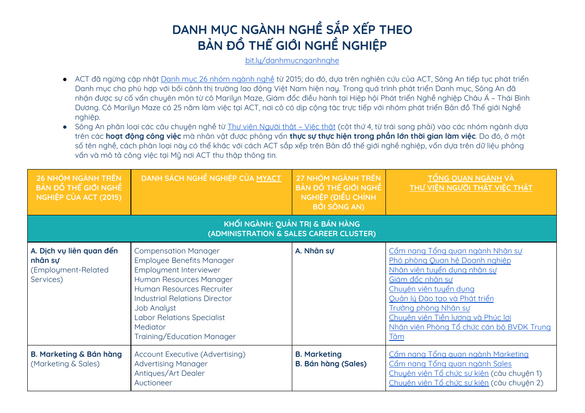

PDF · 262 trang
Sách tra cứu nghề
Tài liệu giúp học sinh tìm hiểu nhiều nghề, đặc điểm công việc và những thông tin cần cân nhắc trước khi lựa chọn hướng đi.
Đọc trực tuyến hoặc tải bản PDF về máy để tìm hiểu ngành nghề ngay cả khi không có kết nối mạng.
Tài liệu giúp học sinh tìm hiểu nhiều nghề, đặc điểm công việc và những thông tin cần cân nhắc trước khi lựa chọn hướng đi.

Xem tài liệu ↗Danh mục ngành nghề được sắp xếp theo Bản đồ thế giới nghề nghiệp, giúp bạn mở rộng danh sách nghề cần tìm hiểu.
Khám phá đặc điểm công việc, kiến thức, kỹ năng và môi trường nghề nghiệp dựa trên nhóm sở thích Holland nổi trội của bạn.
Thực hiện lần lượt năm bước dưới đây để tìm hiểu nghề và đối chiếu với định hướng của bản thân.
Nhấn vào đường dẫn O*NET Online ↗ để bắt đầu tra cứu.
Chọn nhóm Holland có mức độ phù hợp cao nhất với bản thân hoặc nhóm mà bạn muốn tìm hiểu:
Sau khi chọn nhóm, xem danh sách nghề nghiệp được O*NET gợi ý. Tên nghề nằm ở cột “Occupation”.
Nhấn vào tên một nghề để xem thông tin chi tiết như mô tả công việc, nhiệm vụ chính, kỹ năng cần thiết, trình độ đào tạo, triển vọng việc làm, mức lương tham khảo và các thông tin liên quan. O*NET cung cấp nhiều nhóm dữ liệu về nghề nghiệp và yêu cầu công việc để bạn tìm hiểu sâu hơn.
Sử dụng các thông tin thu được để tham khảo và đối chiếu với sở thích, năng lực và định hướng cá nhân trước khi lựa chọn nghề nghiệp.